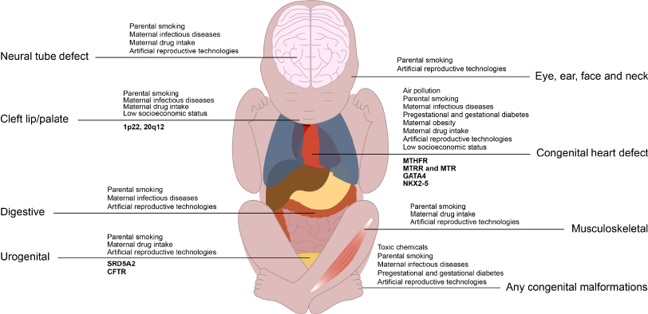
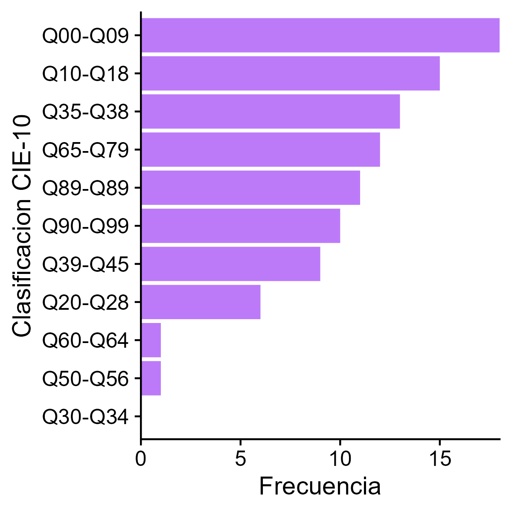
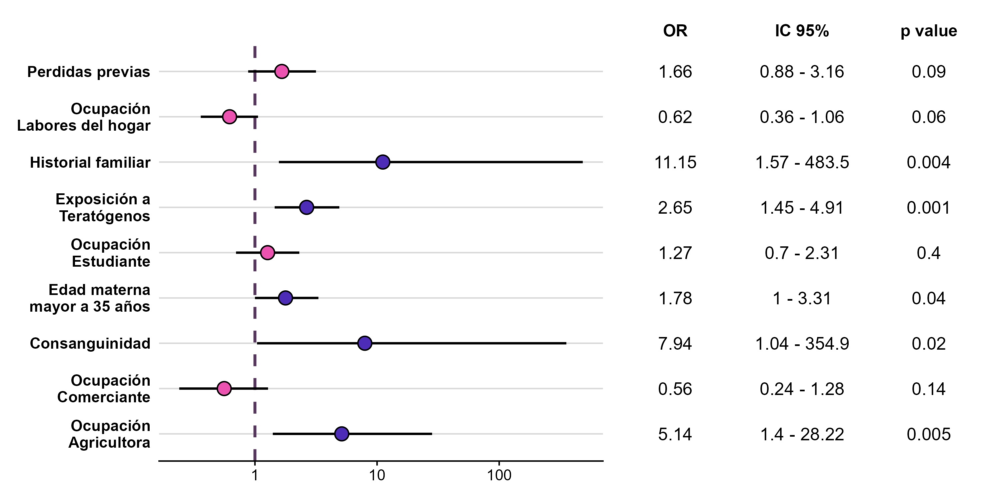
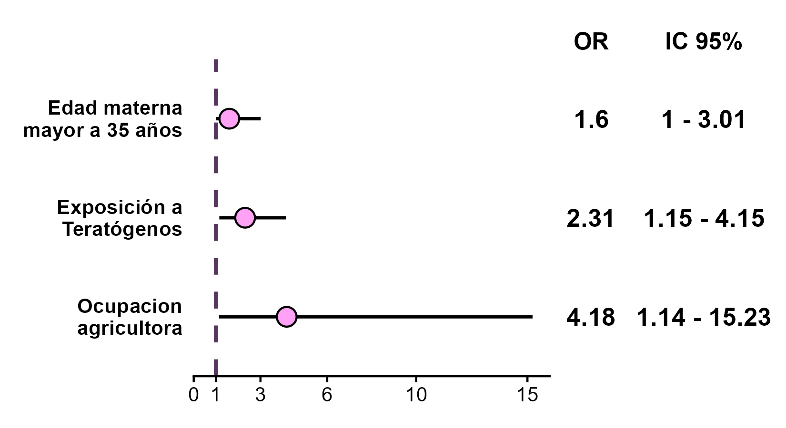

Introducción
Las anomalías congénitas (AC), también conocidas como malformaciones congénitas o defectos de nacimiento, pueden definirse como anomalías funcionales o estructurales que se producen durante la vida intrauterina. Se estima que su prevalencia al nacimiento es de 2% a 3%. El Global Burden of Disease Study 2019 destaco a las AC como la 4ta causa de morbilidad entre niños de 0 a 9 años, además de ser una causa importante de mortalidad, un estudio de Boyle B, et al. sobre los datos del “WHO Mortality Database” revelo que el 17%-43% de la mortalidad infantil se atribuye a AC. Representan un importante problema de salud pública en términos de impacto en la calidad de vida de los niños y adultos afectados y sus familias, la prestación, la calidad y el coste financiero de los servicios médicos, sociales y educativos para mejorar la participación y la calidad de vida de las personas afectadas y sus familias.
Resaltado la creciente importancia de las AC, en el año 2010 se llevó acabo la 63° Asamblea Mundial de la Salud por la Organización Mundial de la Salud, donde se abarcaron las AC, instando a sus estados miembros a que establezcan prioridades, consignen recursos y formulen planes y actividades para integrar intervenciones eficaces de prevención de los defectos congénitos y atención a los niños con AC.
La prevalencia de las diferentes AC varía mucho, dependiendo de la región geográfica y las peculiaridades de cada territorio, la población estudiada y el diseño de cada estudio, sin embargo, las más frecuentes suelen ser las cardiopatías congénitas, anomalías cromosómicas y defectos del sistema nervioso.
Tanto los factores genéticos como los ambientales pueden inducir el desarrollo de AC, La mayoría de las AC son causadas por complejas interacciones gen-ambiente, en su mayoría aún desconocidas, siendo este mecanismo responsable de aproximadamente el 70% de las AC reportadas. La asociación de las AC con factores de riesgo ambientales se basa en la exposición materna a contaminantes ambientales (contaminación atmosférica, productos químicos tóxicos), el tabaquismo de los padres, los antecedentes maternos (enfermedades infecciosas durante el embarazo, diabetes mellitus pregestacional y gestacional, y diabetes mellitus gestacional), la obesidad materna, la ingesta de fármacos por parte de la madre, el embarazo mediante tecnologías de reproducción artificial y los factores socioeconómicos. El resto de los casos de AC se pueden atribuir a causas genéticas-cromosómicas ya conocidas.

Actualmente existe una falta en el conocimiento de la prevalencia y factores de riesgo asociados a AC en Bolivia. Es una realidad que nuestro entorno difiere de otros por varios factores que pueden influir en la incidencia de las AC, desde el bajo nivel socioeconómico de la población, que se relaciona con la incidencia de algunas AC, además nuestra población realiza gran actividad minera y agricultora, que predisponen a la exposición ocupacional a varias sustancias relacionadas al desarrollo de AC. Otro factor especifico del oeste de Bolivia es la gran altitud de sus ciudades, la ciudad de La Paz se encuentra a 3600 m.s.n.m., sometiendo a su población a hipoxia crónica, aumentando la incidencia de ciertas AC.
Material y métodos
Diseño
Realizamos un estudio observacional, prospectivo de casos y controles pareado de AC diagnosticadas al nacimiento en el Hospital de la Mujer de la cuidad de La Paz, Bolivia, localizado a una altura de 3600 metros sobre el nivel del mar, en los periodos del año 2018 al 2019.
Definición de caso y control, criterios de inclusión y exclusión
Un caso fue definido como recién nacido diagnosticado con alguna AC, definida como anomalías estructurales o anatómicas de órganos o segmentos corporales, listados en el decimoséptimo capítulo de la lista de códigos CIE-10 (Clasificación internacional de enfermedades) “Malformaciones congénitas, deformidades y anomalías cromosómicas”. No se incluyó a los neonatos con AC que no se hospitalizaron, ni a los mortineonatos.
Un control fue definido como un recién nacido internado sin AC. Los controles fueron pareados individualmente (radio 1:1) con su respectivo caso en base al sexo y fecha de internación.
Muestra
El estudio fue diseñado para tener un poder estadístico del 80% y un nivel del significancia de 0.05 para detectar un odds ratio de 3 o superior, suponiendo una probabilidad de exposición del 20% entre los casos y controles con un radio entre ambos de 1:1.
Análisis estadístico
Las variables dicotómicas se expresaran como números (porcentajes) con un IC del 95%, y las variables continuas como medias, intervalos de confianza (IC) del 95% y/o rango intercuartilar, se compararon las variables continuas entre ambos grupos mediante la prueba de t de student, y se consideró significativo un valor p < 0,05. Para determinar el tamaño del efecto de los factores de riesgo estudiados se calcularon odds ratio modificado para estudios de casos y controles pareados, se consideraron como significativas aquellas variables con una p < 0.05. Dichas variables significativas fueron incluidas en un modelo de regresión logística multivariada, para el cálculo de odds ratio ajustado (aOR). Para los cálculos se utilizo R Statistical Software version 4.3.0 (R Core Team, 2023).
Consideraciones éticas
La investigación fue aprobada por los comités de ética institucionales correspondientes. Los datos fueron recolectados de manera prospectiva en contacto directo con los pacientes, por lo que se recabaron consentimientos informados de cada caso.
Resultados
En el marco del presente estudio, se ha constatado una prevalencia de anomalías congénitas cifrada en un 2.3% (intervalo de confianza del 95%: 2.1 - 2.4) en la población objeto de análisis. Las anomalías congénitas predominantes se relacionaron primordialmente con el sistema nervioso central, así como con malformaciones faciales y anomalías en labios, boca y paladar.

Se registró una significativa disminución en los parámetros de peso, talla, perímetro cefálico y edad gestacional en los recién nacidos afectados por estas anomalías en comparación con sus contrapartes sin ellas.
| Total | Casos | Controles | ||
| Media (IC95%) | p | |||
| Edad gestacional | 37.24 (36.91 - 37.57) | 36.44 (35.9 - 36.99) | 38.1 (37.78 - 38.40) | 0,000 |
| Peso (g) | 2891.1 (2801.86 - 2980.33) | 2699.54 (2554.03 - 2845.05) | 3093.45 (3002.73 - 3184.17) | 0,000 |
| Talla (cm) | 47.73 (47.23 - 48.23) | 46.64 (45.80 - 47.49) | 48.88 (48.44 - 49.32) | 0,000 |
| Perimetro cefalico (cm) | 33.21 (32.82 - 33.58) | 32.74 (32.03 - 33.37) | 33.74 (33.43 - 34.05) | 0,007 |
| Edad materna | 28.08 (27.26 - 28.89) | 28.51 (27.29 - 29.72) | 27.94 (26.63 - 28.71) | 0,28 |
Al examinar diversos factores de riesgo mediante análisis de regresión logística univariada, se constató que el historial familiar de anomalías congénitas, la exposición a teratógenos, particularmente los pesticidas, la ocupación materna en el sector agrícola, la edad materna superior a 35 años y la consanguinidad, mostraron asociaciones estadísticamente significativas.

Posteriormente, al someter estas variables a un análisis de regresión logística multivariada, se procedió a controlar el posible efecto de variables confusoras, y se concluyó que únicamente la exposición a teratógenos, la ocupación materna en la agricultura y la edad materna mayor de 35 años mantuvieron su significancia, presentando un Odds ratio distinto de 1.

Referencias
Lee KS, Choi YJ, Cho J, Lee H, Lee H, Park SJ, Park JS, Hong YC. Environmental and Genetic Risk Factors of Congenital Anomalies: an Umbrella Review of Systematic Reviews and Meta-Analyses. J Korean Med Sci. 2021 Jul;36(28):e183.
Baldacci S, Gorini F, Santoro M, Pierini A, Minichilli F, Bianchi F. Environmental and individual exposure and the risk of congenital anomalies: a review of recent epidemiological evidence. Epidemiol Prev. 2018;42: 1–34. doi:10.19191/EP18.3-4.S1.P001.057
Donoso B, Oyarzún E. Anomalías congénitas. Medwave. 2012;12: e5537. doi:10.5867/medwave.2012.09.5537
Vos T, Lim SS, Abbafati C, Abbas KM, Abbasi M, Abbasifard M, et al. Global burden of 369 diseases and injuries in 204 countries and territories, 1990–2019: a systematic analysis for the Global Burden of Disease Study 2019. The Lancet. 2020;396: 1204–1222. doi:10.1016/S0140-6736(20)30925-9
Boyle B, Addor M-C, Arriola L, Barisic I, Bianchi F, Csáky-Szunyogh M, et al. Estimating Global Burden of Disease due to congenital anomaly: an analysis of European data. Arch Dis Child Fetal Neonatal Ed. 2018;103: F22–F28. doi:10.1136/archdischild-2016-311845
González-Andrade F. High Altitude as a Cause of Congenital Heart Defects: A Medical Hypothesis Rediscovered in Ecuador. High Alt Med Biol. 2020;21: 126–134. doi:10.1089/ham.2019.0110
Gonzales GF. [Impact of high altitude on pregnancy and newborn parameters]. Rev Peru Med Exp Salud Publica. 2012;29: 242–249. doi:10.1590/s1726-46342012000200013